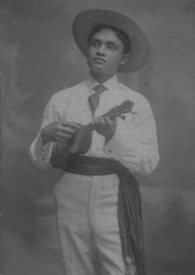

Home / Living Traditions / Pacific and Oceania
Playable heritage gameUkulele strum-along
Also known as 'Ukulele
The 'ukulele is a small four-string guitar that took its Hawaiian form in the 1880s from small guitars brought by Portuguese settlers. Its re-entrant tuning gives a bright, chiming strum that suits singing along.

How to play
- The four strings are on the top row and four chord strums on the lower row.
- Notes travel toward a line at the bottom; strike the lane just as a note arrives.
- In the first song, strum the chord named in each bar with a down, a down-up and an up-down-up.
- Then pick the strings one by one in the arpeggio, and finish with the short chop strum.
Rules at a glance
- The strings are tuned G, C, E, A with the G above the C, a re-entrant tuning.
- A stroke within a hair of the note is perfect, a near one is good, and a missed one scores nothing.
- An extra stroke while a song is running costs a few points.
- Each song plays twice; three stars need roughly nine notes in ten on time.
- A chord lane is one sounded note at the chord's root; strum direction is not judged.
About the tradition
The 'ukulele grew from small guitars of Madeira that reached Hawaii in 1879. It became a staple of island music and is now played in schools, bands and living rooms around the world.
Origins
A living tradition passed from person to person; it is not tied to a single dated origin. It belongs to the cultural world of Pacific and Oceania.
Credits
- Tradition: Hawaiian 'ukulele strumming; figures written for this game
- Photo of a Hawaiian musician from the Pan-American Exposition archive (public domain)
- Photo: Beach Photo Studio, Buffalo, NY, Public domain, source on Wikimedia Commons
- Text: CC BY-SA 4.0, World Heritage Games.
Sources

Get the app
Ukulele strum-along is coming to the App Store and Google Play. One app, many traditions, no account needed.
Included in Music & Dance: Cueca & Dizi
More games to play


_(cropped).jpg){kind=link}
More from United States


Checkers
Bahamas +1 · Board and table games
Chickenfoot
United States · Board and table games